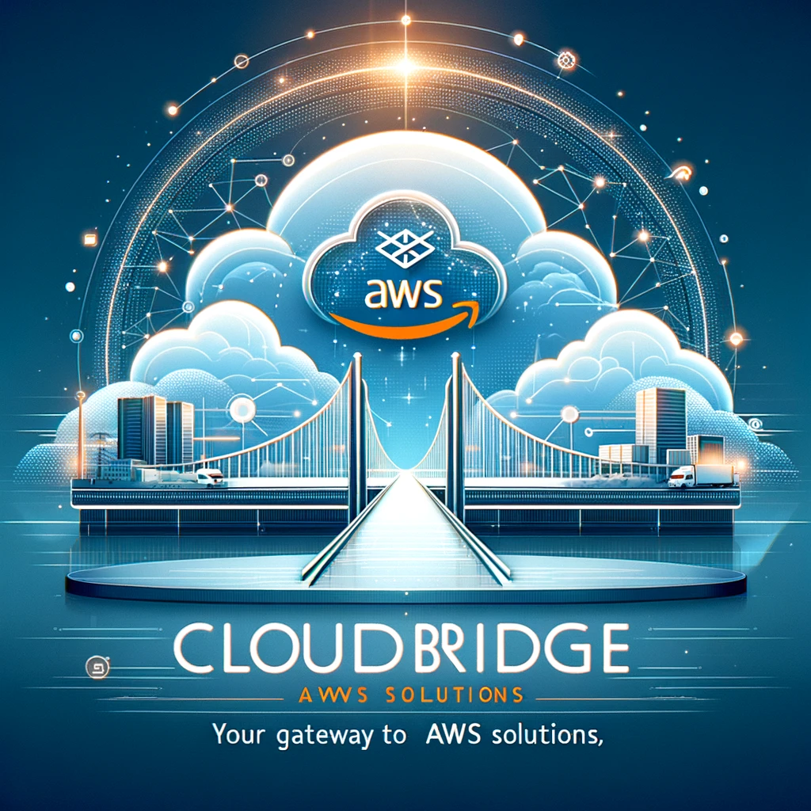
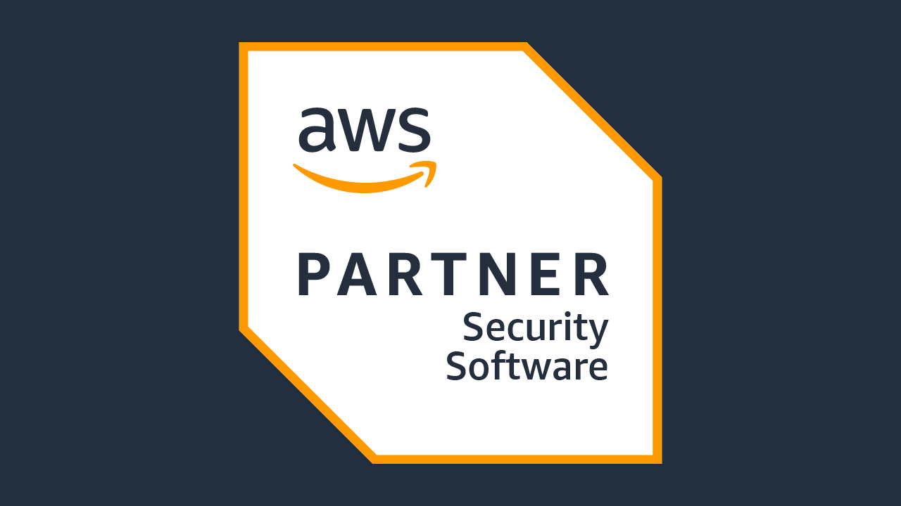

Bienvenidos a CloudBridge AWS
Explora nuestros servicios y descubre cómo podemos ayudarte a innovar y crecer con la tecnología de AWS. En un mundo cada vez más digitalizado, la adaptación y optimización de recursos en la nube es clave para el éxito de cualquier empresa. Permítenos ser tu guía en este viaje hacia la transformación digital.
Con años de experiencia en la industria y un profundo conocimiento en soluciones AWS, nuestro equipo está más que capacitado para enfrentar cualquier desafío, asegurando que tu infraestructura en la nube sea segura, eficiente y escalable.
Nos especializamos en una amplia gama de servicios, desde la planificación estratégica hasta la implementación técnica y el soporte continuo. Ya sea que estés comenzando tu migración a la nube o buscando optimizar tu infraestructura existente, estamos aquí para ayudarte.
 